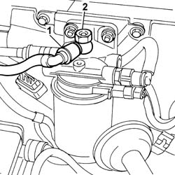

1044B16 Fuel supply/return adjustment valve on fuel filter - R.R.
- Path
- Procedures > 10 ENGINE > 1044 FUEL CIRCUIT PUMP/S AND DEVICES > 1044B FUEL FILTERS > 1044B16 Fuel supply/return adjustment valve on fuel filter - R.R.
- Kind
- repair procedure (removal / refitting; the operation number is the code)
- Applies to
- engines: 2.4 JTD 20V; all production periods
- Interactive page
- https://sloeber94.github.io/elrnDB-lThss/en/#/850363
Applies to: engines: 2.4 JTD 20V; all production periods
 Removing
Removing
 Refitting
Refitting1. Disconnect the rapid connector.
2. Undo the connector with built in regulation valve.

Applies to: engines: 2.4 JTD 20V; all production periods
Refitting
Removing- Tighten the connector with built in regulation valve.
- Connect the rapid connector.